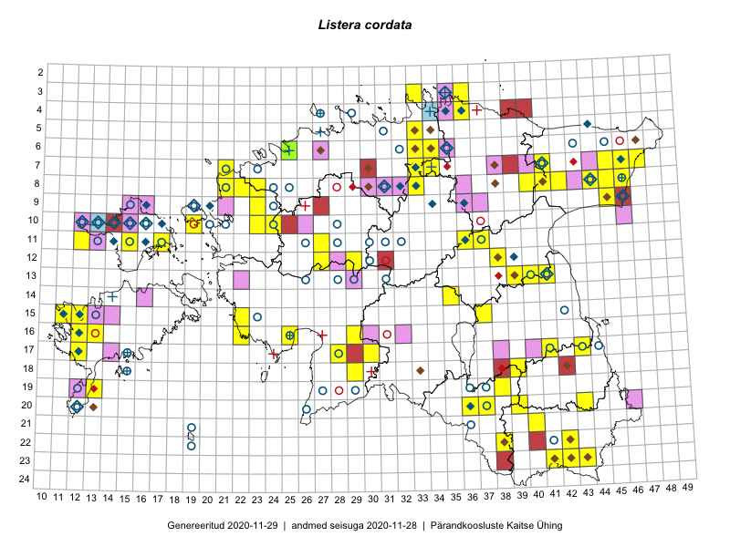

Listera cordata
Uuendatud: 2016-12-08
Kaardile koondatud taksonid: Listera cordata (L.) R.Br.

Kaart põhineb 70 vaatlusel. Taime on leitud 34 ruudust.
| Ruut | Vaatleja(d) | Vaatlusaeg | Kirje tüüp | Viide andmebaasikirjele |
|---|---|---|---|---|
| ? | Malle Leht | 2015-07-09 | ruut/ala | vaata PlutoFis |
| 17-28 | Peedu Saar, Liina Oja | 2015-06-09 | punkt | vaata PlutoFis |
| 17-41 | Peedu Saar, Thea Kull | 2015-06-19 | punkt | vaata PlutoFis |
| 17-28 | Peedu Saar, Liina Oja | 2015-06-09 | ruut/ala | vaata PlutoFis |
| 08-45 | Peedu Saar, Liina Oja | 2015-07-22 | ruut/ala | vaata PlutoFis |
| 08-45 | Peedu Saar, Liina Oja | 2015-07-22 | punkt | vaata PlutoFis |
| 08-45 | Peedu Saar, Liina Oja | 2015-07-22 | punkt | vaata PlutoFis |
| 08-45 | Peedu Saar, Liina Oja | 2015-07-22 | punkt | vaata PlutoFis |
| 08-45 | Peedu Saar, Liina Oja | 2015-07-22 | punkt | vaata PlutoFis |
| 08-41 | Ott Luuk, Meeli Mesipuu | 2015-07-20 | ruut/ala | vaata PlutoFis |
| 17-41 | Thea Kull, Peedu Saar | 2015-06-19 | ruut/ala | vaata PlutoFis |
| 08-41 | Meeli Mesipuu, Ott Luuk | 2015-07-20 | punkt | vaata PlutoFis |
| 08-33 | Jana-Maria Habicht, Ester Valdvee, Kirke Pilvik | 2015-05-17 | ruut/ala | vaata PlutoFis |
| 16-22 | Indrek Tammekänd | 2014-06-05 | punkt | vaata PlutoFis |
| 16-25 | Indrek Tammekänd | 2014-06-28 | punkt | vaata PlutoFis |
| 15-22 | Indrek Tammekänd, Kadri Runnel, Leho Tedersoo, Urmas Kõljalg | 2015-08-20 | punkt | vaata PlutoFis |
| 08-33 | Jana-Maria Habicht, Ester Valdvee, Kirke Pilvik | 2015-05-17 | punkt | vaata PlutoFis |
| 11-17 | Eeva-Maria Jeletsky, Tarmo Niitla | 2015-06-20 | punkt | vaata PlutoFis |
| 11-17 | Eeva-Maria Jeletsky, Tarmo Niitla | 2015-06-20 | ruut/ala | vaata PlutoFis |
| 17-12 | Mari Reitalu | 2015-07-02 | ruut/ala | vaata PlutoFis |
| 17-12 | Mari Reitalu | 2015-07-02 | punkt | vaata PlutoFis |
| 16-13 | Mari Reitalu, Oliver Parrest | 2015-05-22 | ruut/ala | vaata PlutoFis |
| 16-13 | Mari Reitalu, Oliver Parrest | 2015-07-27 | ruut/ala | vaata PlutoFis |
| 18-12 | Mari Reitalu, Oliver Parrest | 2015-05-22 | ruut/ala | vaata PlutoFis |
| 15-11 | Mari Reitalu, Oliver Parrest | 2015-07-16 | ruut/ala | vaata PlutoFis |
| 16-13 | Sirje Azarov, Aira Alasi | 2015-07-20 | ruut/ala | vaata PlutoFis |
| 16-13 | Sirje Azarov, Aira Alasi | 2015-07-20 | punkt | vaata PlutoFis |
| 06-25 | Mari Metsoja, Jaak-Albert Metsoja | 2015-07-25 | ruut/ala | vaata PlutoFis |
| 16-13 | Mari Reitalu, Oliver Parrest | 2015-07-27 | punkt | vaata PlutoFis |
| 15-11 | Mari Reitalu, Oliver Parrest | 2015-07-16 | punkt | vaata PlutoFis |
| 16-13 | Mari Reitalu, Oliver Parrest | 2015-05-22 | punkt | vaata PlutoFis |
| 07-47 | Peedu Saar, Thea Kull | 2014-07-24 | ruut/ala | vaata PlutoFis |
| 07-47 | Thea Kull, Peedu Saar | 2014-07-24 | punkt | vaata PlutoFis |
| 15-11 | Meeli Mesipuu, Tiiu Kull | 2016-05-27 | punkt | vaata PlutoFis |
| 12-27 | Tiit Hallikma, Ott Luuk | 2016-05-14 | punkt | vaata PlutoFis |
| 16-29 | Indrek Tammekänd | 2016-06-07 | punkt | vaata PlutoFis |
| 07-45 | Indrek Tammekänd | 2016-05-30 | punkt | vaata PlutoFis |
| 07-46 | Indrek Tammekänd | 2016-05-30 | punkt | vaata PlutoFis |
| 08-46 | Indrek Tammekänd | 2016-05-29 | punkt | vaata PlutoFis |
| 22-38 | Rein Kalamees, Eerik Leibak | 2016-06-16 | punkt | vaata PlutoFis |
| 22-38 | Rein Kalamees, Eerik Leibak | 2016-06-16 | ruut/ala | vaata PlutoFis |
| 23-41 | Sander Laherand, Ott Luuk, Susanna Vain | 2016-06-15 | ruut/ala | vaata PlutoFis |
| 20-37 | Liina Oja, Maret Gerz | 2016-06-17 | punkt | vaata PlutoFis |
| 20-37 | Liina Oja, Maret Gerz | 2016-06-17 | punkt | vaata PlutoFis |
| 20-37 | Liina Oja, Maret Gerz | 2016-06-17 | punkt | vaata PlutoFis |
| 20-37 | Maret Gerz, Liina Oja | 2016-06-16 | ruut/ala | vaata PlutoFis |
| 20-37 | Maret Gerz, Liina Oja | 2016-06-16 | punkt | vaata PlutoFis |
| 07-41 | Eerik Leibak, Leevi Krumm | 2016-06-27 | punkt | vaata PlutoFis |
| 07-41 | Eerik Leibak, Leevi Krumm | 2016-06-27 | punkt | vaata PlutoFis |
| 18-29 | Indrek Tammekänd, Tuuli Teppo | 2016-06-06 | punkt | vaata PlutoFis |
| 10-19 | Liina Oja, Rein Kalamees | 2016-07-07 | punkt | vaata PlutoFis |
| 11-12 | Thea Kull, Peedu Saar | 2016-08-10 | punkt | vaata PlutoFis |
| 11-12 | Peedu Saar, Thea Kull | 2016-08-10 | ruut/ala | vaata PlutoFis |
| 03-36 | Liina Oja, Meeli Mesipuu | 2016-07-26 | punkt | vaata PlutoFis |
| 23-43 | Timo Luhamäe, Meeli Mesipuu | 2016-06-15 | punkt | vaata PlutoFis |
| 23-43 | Timo Luhamäe, Meeli Mesipuu | 2016-06-15 | punkt | vaata PlutoFis |
| 23-43 | Timo Luhamäe, Meeli Mesipuu | 2016-06-15 | punkt | vaata PlutoFis |
| 10-19 | Rein Kalamees, Liina Oja | 2016-07-07 | ruut/ala | vaata PlutoFis |
| 08-21 | Tiit Hallikma, Tõnu Ploompuu | 2016-07-07 | ruut/ala | vaata PlutoFis |
| 03-33 | Peedu Saar, Timo Luhamäe | 2016-07-26 | ruut/ala | vaata PlutoFis |
| 08-42 | Peedu Saar, Timo Luhamäe | 2016-07-29 | ruut/ala | vaata PlutoFis |
| 08-21 | Tiit Hallikma, Tõnu Ploompuu | 2016-07-07 | punkt | vaata PlutoFis |
| 08-21 | Tiit Hallikma, Tõnu Ploompuu | 2016-07-07 | punkt | vaata PlutoFis |
| 03-33 | Timo Luhamäe, Peedu Saar | 2016-07-26 | punkt | vaata PlutoFis |
| 08-42 | Timo Luhamäe, Peedu Saar | 2016-07-29 | punkt | vaata PlutoFis |
| 11-27 | Meeli Mesipuu | 2016-07-08 | ruut/ala | vaata PlutoFis |
| 11-27 | Meeli Mesipuu | 2016-07-08 | punkt | vaata PlutoFis |
| 03-36 | Meeli Mesipuu, Liina Oja | 2016-07-26 | ruut/ala | vaata PlutoFis |
| 23-41 | Ott Luuk, Sander Laherand, Susanna Vain | 2016-06-15 | punkt | vaata PlutoFis |
| 09-23 | Jaak-Albert Metsoja, Mari Metsoja | 2016-07-06 | ruut/ala | vaata PlutoFis |